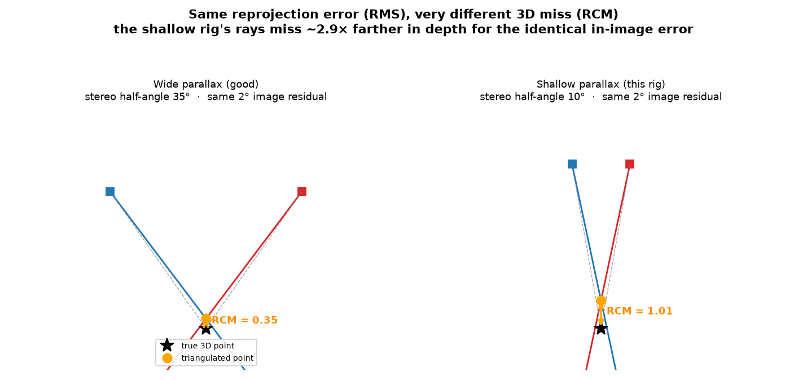

RMS vs RCM: two very different calibration quality numbers¶
OpenPTV reports two calibration errors that are easy to confuse. They measure different things, and on many real rigs they disagree by ~10×. Reading only the first one will make you believe a rig is far better than it is.
- RMS — per-camera reprojection error, in pixels. How well each camera's model reproduces its own detected dots. An in-image, single-camera number.
- RCM — cross-camera ray-convergence miss distance, in millimetres. How close the cameras' back-projected rays actually come to meeting at one 3D point. A 3D, multi-camera number.
RMS answers "does each camera fit its own data?" RCM answers "do the cameras agree with each other in 3D?" — which is what triangulation, stereo-matching, and tracking actually depend on.
Formulas¶
RMS (one camera, n matched calibration points): reproject each known 3D
point Xᵢ through that camera's model to pixel x̂ᵢ, compare to the detected
pixel xᵢ:
Everything here lives in one camera's image plane. Nothing in this expression involves any other camera.
RCM (one 3D point seen by m ≥ 2 cameras): back-project each camera's
detection to a ray Rⱼ(t) = Cⱼ + t·dⱼ (camera centre + direction, through the
multimedia interface), find the 3D point P* closest to all rays, and average the
ray-to-point miss:
multi_cam_point_positions returns P* and this miss distance directly, so
RCM is read straight out of triangulation — no new geometry.
Why they diverge: shallow parallax¶
The cameras' rays cross at a stereo angle. A small in-image error δ (the RMS)
displaces the ray by a small angle, but the resulting shift of the intersection
scales roughly as
At a wide stereo angle sin(parallax) is near 1 and the 3D error stays small. At a
shallow angle (short baseline relative to range — exactly the OpenPTV splitter
geometry, where all sub-apertures look through nearly the same direction) sin is
small and the same δ blows up along the line of sight. The rays pass close
sideways but miss badly lengthwise in depth.

Same 2° image residual in both panels. Wide parallax (left): the triangulated
point barely moves. Shallow parallax (right, this rig's regime): it drifts ~3×
farther along depth. Regenerate with uv run python
docs/figures/make_rms_vs_rcm_figure.py.
This is why RMS cannot see the problem: it is computed independently per camera and never asks whether the cameras agree. You can drive every camera's RMS sub-pixel and still have a rig that triangulates poorly.
A real example (aorta, 4-view splitter)¶
After the interf glass-tilt fit:
| camera | RMS (px) | points matched |
|---|---|---|
| cam1 | 0.84 | 81 / 135 |
| cam2 | 1.13 | 80 / 135 |
| cam3 | 0.74 | 71 / 135 |
| cam4 | 0.96 | 76 / 135 |
Cross-camera RCM (38 points seen in all 4 cameras): p50 = 0.076 mm, p95 = 0.206 mm, max = 0.323 mm. The p95 is ~2.7× the median — the shallow-parallax tail. Sub-pixel RMS alone would have told you the rig is essentially perfect; RCM tells you the true 3D consistency and where the tail is.
How to read the numbers¶
- RMS — expect sub-pixel (< ~1 px) for a good fit. A camera stuck at 2–3 px
usually means an unmodeled distortion (see the bundle-adjustment
doc; on this rig the glass
interftilt took cam2 from 2.4 → 1.1 px). RMS is necessary but not sufficient. - RCM — this is the number that predicts downstream 3D quality. Compare its p95/max against your triangulation tolerance and particle spacing. If RCM ≫ your acceptable 3D error, the rig is inconsistent as a set even when every RMS looks great. RCM does not shrink just because RMS does.
- The ratio RCM/RMS (in comparable units) exposes parallax sensitivity: a large ratio means a geometry that amplifies small image errors — inherent to the rig, not a fit you can tighten arbitrarily.
How to get the numbers¶
uv run python skills/openptv-calibrate/scripts/calib.py run <dataset> \
--output report.json # RMS + RCM printed, both in report.json
from openptv2.autocalibration import (
calibrate_dataset,
cross_camera_rcm,
_load_dataset_params,
resolve_calblock,
)
results = calibrate_dataset("<dataset>") # per-camera RMS in results[i].rms
cpar = _load_dataset_params("<dataset>", resolve_calblock("<dataset>")).cpar
print(
cross_camera_rcm(results, cpar)
) # {n_points, n_common, median, p90, p95, max} in mm
--rcm-flag-mm (default 0.1) sets the threshold above which run warns that RCM
is high relative to RMS.
What to do when RCM is high but RMS is low¶
That combination means the cameras individually fit fine but disagree in 3D. The fix is a calibration step that has a cross-camera term — see calibration-bundle-adjustment.md. In short: per-camera resection (the default) can't lower RCM; a joint bundle adjustment or tracer self-calibration can, because they couple the cameras through shared 3D points.